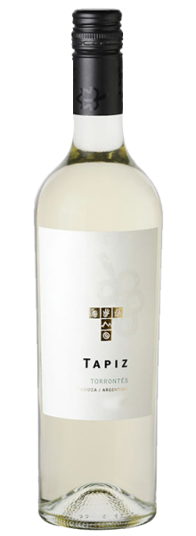
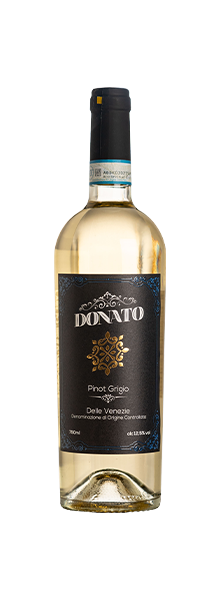

O Vinho Convento da Glória Reserva Touriga Nacional é um vinho tinto português produzido na
região do
Lisboa, em Portugal. De coloração rubi intenso, exibe, no nariz, aromas intensos de frutas
negras, como
amoras e mirtilos, acompanhados de notas florais de violeta. No paladar, o Convento da Glória
Reserva
apresenta um equilíbrio harmonioso entre acidez e taninos macios.
R$85,00

Tapiz Classic Torrontés 2022
O Tapiz Classic Torrontés é um vinho branco argentino produzido pela Bodega Tapiz, localizada na
região de Mendoza, uma das áreas vinícolas mais renomadas da Argentina. De coloração amarelo
palha, com reflexos esverdeados, revela, no nariz, aromas intensos e cativantes, com notas
florais, especialmente de rosas, e frutadas, como pêssego, damasco e maracujá. Na boca,
apresenta uma acidez refrescante e equilibrada, complementada por sabores frutados, como frutas
cítricas, pera e maçã verde. Sua textura é agradável, com um final persistente e saboroso.
R$98,00
Finca La Anita Malbec 2021
O Vinho Finca La Anita Malbec apresenta uma cor vermelho-rubi intensa e brilhante, típica dos
Malbecs argentinos. No nariz, exibe uma profusão de aromas frutados, com destaque para frutas
vermelhas maduras, como cerejas e amoras, complementadas por notas florais sutis e um toque de
especiarias, como pimenta preta e noz-moscada. Na boca, é um Malbec encorpado e suculento, com
taninos macios e bem integrados, proporcionando uma textura aveludada. A acidez equilibrada dá
frescor e vivacidade ao vinho, enquanto o final é longo e persistente, deixando uma sensação
frutada e levemente picante.
R$154,90
Pedra Cancela Seleção do Enólogo Branco 2023
O Vinho Pedra Cancela Seleção do Enólogo Branco é um vinho português que destaca a riqueza e a
tradição da viticultura da região do Dão. Elaborado com as variedades de uvas Encruzado, Cerceal
Branco e Malvasia. De coloração amarelo claro, brilhante, com nuances esverdeadas, revela, no
nariz, aromas frescos e intensos de frutas tropicais como abacaxi e maracujá, acompanhados por
toques cítricos e florais que conferem uma complexidade aromática agradável. Na boca, é um vinho
equilibrado e fresco, com uma acidez bem integrada que lhe confere vivacidade. O sabor frutado
se mantém, com destaque para frutas tropicais e cítricas, além de um leve toque mineral que é
característico dos vinhos da região do Dão. O final é longo e refrescante, deixando uma sensação
de frescor e um retrogosto agradável
R$84,00
Noventa y Cuatro Histórico Gran Reserva Carménère 2021
O ano de 1994 foi historicamente marcante para a indústria vinícola do Chile, pois representou a
redescoberta da uva Carménère, um evento que revolucionou o cenário vitivinícola do país.
Durante décadas, essa casta, originária da França, havia sido erroneamente identificada como
Merlot nas vinhas chilenas. No entanto, graças a um ampelógrafo francês em visita a um vinhedo
chileno local, identificou que, entre as vinhas de Merlot, encontravam-se, misturadas, vinhas de
Carménère. Mesmo nunca tendo visto, pessoalmente, vinhas de Carménère, já que estavam
teoricamente extintas há um século, ele conhecia suas folhas conservadas em algumas coleções e
assim a verdadeira identidade do Carménère, foi finalmente desvendada. De coloração rubi intensa
com reflexos violáceos, revela, no nariz, aromas de frutas vermelhas e pretas, como amora, notas
de especiarias, como canela, cravo-da-índia e pimenta-branca, nuances herbáceas, além de toques
de tabaco.
R$235,00

Donato Pinot Grigio delle Venezie DOC 2023
O Vinho Donato Pinot Grigio delle Venezie DOC é um rótulo da D.O.C. (Denominação de Origem
Controlada) Pinot Grigio delle Venezie. Produzido pela vinícola Angelo Rocca e Figli, com a uva
Pinot Grigio, oriunda de vinhedos localizados na região vitivinícola de Vêneto, na Itália. De
coloração limão delicado com tons esverdeados, revela, no nariz, aromas de frutas cítricas,
frutas brancas e notas florais. Em boca, é um Pinot Grigio de muito charme e tipicidade, que
esbanja frescor.
R$163,00
Flor de Los Andes Reserva Chardonnay 2023 Chile
O Vinho Flor de Los Andes Reserva Chardonnay 2023, produzido pela renomada Viña Morandé, é um
excelente exemplo da qualidade dos vinhos do Chile. Elaborado com a uva Chardonnay, proveniente
de vinhedos localizados no Valle do Maule, este vinho destaca-se pela sua coloração amarela
brilhante com reflexos esverdeados. No nariz, exala intensos aromas de frutas cítricas, como
abacaxi, além de frutas brancas, como pêra e maçã-verde. No paladar, o Flor de Los Andes Reserva
Chardonnay é fresco, equilibrado, possui médio corpo e oferece um final agradável e persistente.